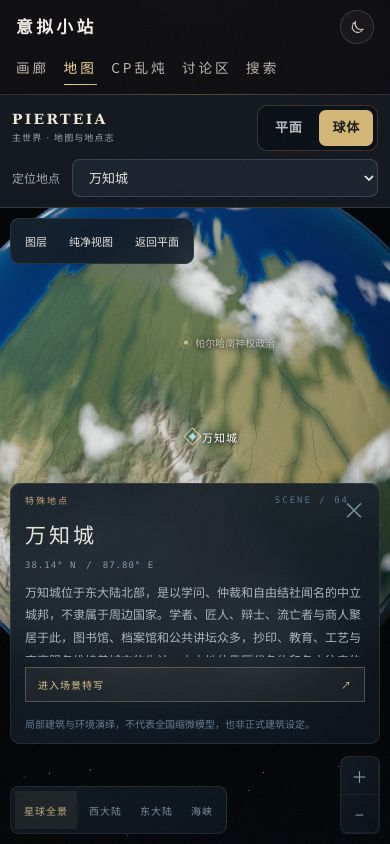

PIERTEIA / MOBILE UI REVIEW / 16
把画面还给地图
真实浏览器截图，不是设计稿。选中地点先显示紧凑卡，介绍按需展开；镜头使用下拉菜单，场景按面板之外的区域取景。
采用 Chromium 软件 WebGL 与触屏模拟，覆盖手机竖屏、横屏、平板和桌面宽度。短屏搜索模拟可用高度缩减，不冒充真实 iPhone 键盘或 Safari 测试。模型、纹理和正式地理数据没有降质或改写。点击图片可查看原尺寸。
390 × 844 · 进入学院
844 × 390 · 手机横屏
320 × 640 · 窄屏
选中地点，不先盖住主体
完整状态截图
正在读取截图记录……
修复前的其余截图
